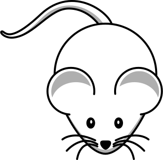

<style>
  body   { height: 640px; }
  #cat   { width: 80px; height: 80px; }
  #mouse { width: 40px; height: 40px; }
</style>

<script>
  // 問7-9
  let cat = document.getElementById("cat")
  cat./* ① */ = function (event) {
    let shiftX = event.clientX - cat.getBoundingClientRect().left
    let shiftY = event.clientY - cat.getBoundingClientRect().top

    function moveAt(pageX, pageY) {
      cat.style.position = 'absolute'
      cat.style.zIndex = 1000
      cat.style.left = pageX - shiftX + 'px'
      cat.style.top = pageY - shiftY + 'px'
    }

    function onPointerMove(event) {
      /* ② */(event.pageX, event.pageY)
      // 問7-10...
      // if (/* ① */(cat./* ② */(), mouse./* ② */())) {
      //   moveAtRandom()
      // }
      // ...問7-10
    }

    /* ③ */.addEventListener('pointermove', /* ④ */)

    // 猫をドロップして、ハンドラーを削除する
    cat./* ⑤ */ = function () {
      /* ③ */./* ⑥ */('pointermove', /* ④ */)
      cat./* ⑤ */ = null
    }
  }

  // ブラウザーのドラッグ&ドロップはコンフリクトしないように無効にする
  cat./* ⑦ */ = () => false


  // 問7-10...
  // function intersectRect(r1, r2) {
  //   return (r2.left /* ③ */ r1.right &&
  //           r2.right /* ④ */ r1.left &&
  //           r2.top /* ③ */ r1.bottom &&
  //           r2.bottom /* ④ */ r1.top)
  // }
  // ...問7-10


  // 問7-11
  // let mouse = document.getElementById("mouse")
  // moveAtRandom() // 最初の場所へ行く
  // function moveAtRandom() {
  //   mouse.style.position = 'absolute'
  //   const maxX = document.documentElement.clientWidth - mouse.clientWidth
  //   const maxY = document.documentElement.clientHeight - mouse.clientHeight

  //   currentX = mouse.getBoundingClientRect().x
  //   currentY = mouse.getBoundingClientRect().y
  //   // 画面を出ないように注意
  //   targetX = Math.floor(Math.random() * /* ① */)
  //   targetY = Math.floor(Math.random() * /* ② */)

  //   // アニメーション
  //   let move = /* ③ */(function () {
  //     if (currentX === targetX && currentY === targetY) {
  //       /* ④ */(move)
  //     } else {
  //       if (currentX /* ⑤ */ targetX) {
  //         currentX += Math.min(10, targetX - currentX)
  //       } else if (currentX /* ⑥ */ targetX) {
  //         currentX -= Math.min(10, currentX - targetX)
  //       }
  //       if (currentY /* ⑤ */ targetY) {
  //         currentY += Math.min(10, targetY - currentY)
  //       } else if (currentY /* ⑥ */ targetY) {
  //         currentY -= Math.min(10, currentY - targetY)
  //       }
  //       mouse.style.left = currentX + 'px'
  //       mouse.style.top = currentY + 'px'
  //     }
  //   }, 5)
  // }
</script>
